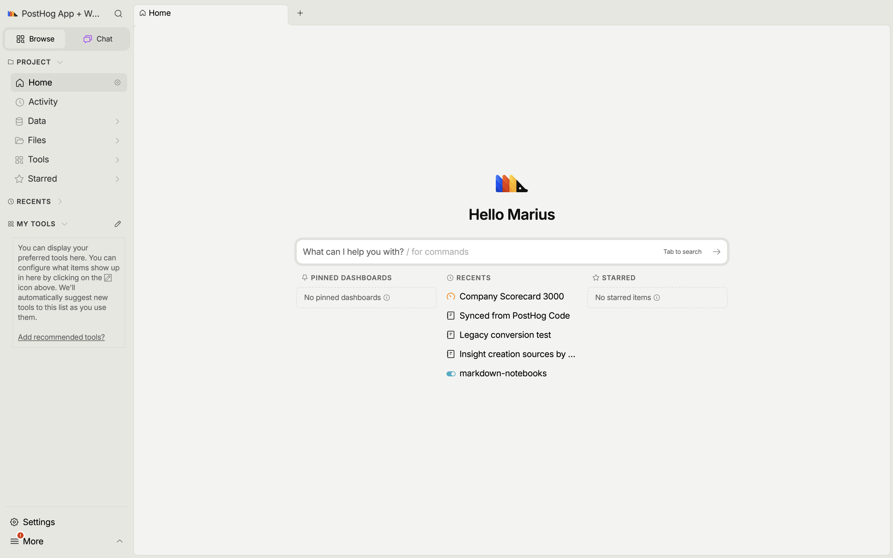

The whole PostHog app,
native — with tabs.
A desktop build of PostHog that runs the real app in its own window. Open several things side by side in tabs, and stay current: an AI agent merges every upstream change, every day.
Free and open source. macOS opens with no quarantine warning. On Windows, SmartScreen may warn on first run — click "More info", then "Run anyway".

The real app, natively
Not a wrapper around a website — it runs the full PostHog frontend in a native window, talking to PostHog Cloud (US or EU) or your own instance.
Built around tabs
Keep an insight, a dashboard, and a query open at once and switch between them. Background tabs stay alive, so nothing reloads when you come back.
Synced every day, by AI
An AI coding agent merges the latest changes from upstream PostHog into this fork daily, resolves the conflicts, and cuts a fresh signed release.
How it stays current
This is a fork of PostHog/posthog. Every day, an automated agent merges upstream master into the desktop branch, fixes anything the merge breaks, and — when the version changes — builds and publishes new macOS and Windows installers. You always get a recent PostHog.